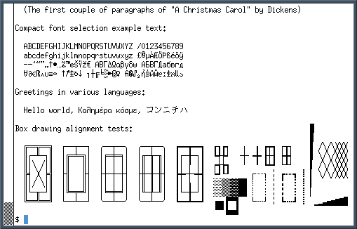
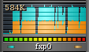
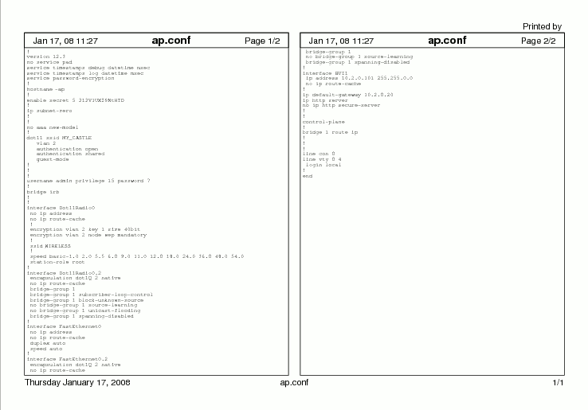
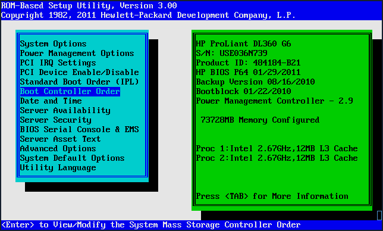
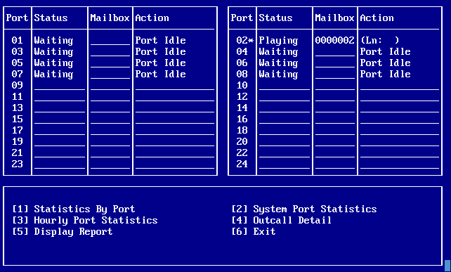

BSD: Networking Included
These are some every-day techniques that I use to get stuff done.
XTerm is Useful
My first recommendation is to use a fast terminal with a bitmap font. The reason I say bitmap is because it will keep up with the display of a live capture.

BSD Kernels track Duplicate IPs
The BSD kernels keep track of MAC-IP resolutions, and will log any changes. It's a good habit to check this after plugging your own laptop into a network. More than once I have plugged my Thinkpad into a network and broken some service because their DHCP server gave me an address that was already used.
$ dmesg ... duplicate IP address 31.6.2.3 sent from ethernet address 00:13:72:a7:ff:14 duplicate IP address 31.6.2.3 sent from ethernet address 00:13:72:a7:ff:14 duplicate IP address 31.6.2.11 sent from ethernet address 00:13:72:a7:f9:04 duplicate IP address 31.6.2.11 sent from ethernet address 00:13:72:a7:f9:04
- Always check after guessing at an IP
- Always check this after an IT guy has assigned you one
- Don't trust DHCP assignments
- IPv6 should not suffer from duplicates often, but IT people will make it happen
Run Daemons as Foreground Processes
Most BSD network daemon can be run in the foreground, which not only gives you the ability to easily test a service again, but you may notice oddities immediately. Below is an example of a site that was configured with two competing DHCP servers.
$ sudo dhclient -d fxp0 DHCPREQUEST on fxp0 to 255.255.255.255 port 67 DHCPNAK from 31.6.1.4 DHCPDISCOVER on fxp0 to 255.255.255.255 port 67 interval 7 DHCPOFFER from 31.6.1.4 DHCPOFFER from 31.6.1.3 DHCPREQUEST on fxp0 to 255.255.255.255 port 67 DHCPACK from 31.6.1.4 bound to 31.6.2.11 -- renewal in 345600 seconds.
Resolve Common Ports
services is a handy reference for common protocols.
$ grep 138 /etc/services netbios-dgm 138/tcp # NETBIOS Datagram Service netbios-dgm 138/udp
I also sometimes document an assignment by defining in
proprietary systems.coral 11001/tcp # Coral PBX management with CUGW
Quickly Find Proxy-Arp
This is insane; sometimes home-office routers are installed that have proxy-ARP enabled by default!(Linksys VPN routers come to mind.) A quick look at the ARP table will show this.
$ arp -a ? (192.168.1.36) at 00:0c:6e:41:e1:56 on xl2 ? (192.168.1.43) at 00:0c:6e:41:e1:56 on xl2 ? (192.168.1.46) at 00:0c:6e:41:e1:56 on xl2 ? (192.168.1.49) at 00:0c:6e:41:e1:56 on xl2 ? (192.168.1.51) at 00:0c:6e:41:e1:56 on xl2 ? (192.168.1.56) at 00:0c:6e:41:e1:56 on xl2 ? (192.168.6.38) at 00:50:ba:58:9e:64 on xl1 ? (192.168.6.13) at 00:11:09:c5:cb:8b on xl1 ? (192.168.6.17) at 00:13:72:d3:da:94 on xl1 ? (192.168.6.18) at 00:0a:6b:00:a5:8b on xl1
Is Someone Else using an IP?
Again, never trust IP assignments, and if I need to assign an IP it's wise to make sure no network card is responding to it.
$ ping -c 1 -n 72.20.216.78 PING 72.20.216.78 (72.20.216.78): 56 data bytes /--- 72.20.216.78 ping statistics --- 1 packets transmitted, 0 packets received, 100.0% packet loss $ arp -an | grep 72.20.216.78 ? (72.20.216.78) at 00:09:6b:42:1a:9e on xl1 ? (72.20.216.62) at (incomplete) on fxp0
Find that Pesky Gateway
Most ARP requests will come from the gateway on a given subnet. The volume of requests make it easy to find the gateway.
$ sudo tcpdump -n arp tcpdump: listening on rl0, link-type EN10MB 20:20:13.080158 arp who-has 192.168.168.199 tell 192.168.168.36 20:20:18.584708 arp who-has 192.168.168.191 tell 192.168.168.36 20:20:24.931355 arp who-has 72.20.216.61 tell 72.20.216.57 20:20:25.955077 arp who-has 192.168.168.199 tell 192.168.168.36 20:20:31.955179 arp who-has 192.168.168.199 tell 192.168.168.36
Log Traffic Between two Devices
If you can't get a hub in-between two points or a switch that support port mirroring a second NIC in a laptop can be set up as a bridge between two points so that full network trace can be captured. In my T30 fxp0 is a built-in network card, and dc0 is a Xircom combo in my PCCard slot.
ifconfig fxp0 up ifconfig dc0 up ifconfig bridge0 up brconfig bridge0 add fxp0 brconfig bridge0 add dc0
$ sudo brconfig
bridge0: flags=41<UP,RUNNING>
priority 32768 hellotime 2 fwddelay 15 maxage 20 holdcnt 6 proto rstp
dc0 flags=3<LEARNING,DISCOVER>
port 5 ifpriority 0 ifcost 0
fxp0 flags=3<LEARNING,DISCOVER>
port 2 ifpriority 0 ifcost 0
Addresses (max cache: 100, timeout: 240):
Now I can log everything with snort
$ sudo snort -l ./
or tcpdump:
$ sudo tcpdump -w file -i ath0 tcpdump: listening on ath0, link-type EN10MB ^C 1557 packets received by filter 0 packets dropped by kernel $ sudo tcpdump -r file icmp ...
With a capture on file comparisons are possible between different samples in time and maybe even match up a flow with a specific event that you learn of from others there.
Double-Check Subnet Masks
Even after setting up networks for a while it's not hard to make a mistake in calculating subnets, so an IP calculator is a handy way to check yourself. It can be installed from ports under net/ipcalc
$ ipcalc 72.20.214.14/28 address : 72.20.214.14 netmask : 255.255.255.240 (0xfffffff0) network : 72.20.214.0 /28 broadcast : 72.20.214.15 host min : 72.20.214.1 host max : 72.20.214.14 hosts/net : 14
Check File Integrity
A router can corrupt a data stream. This is rare, but when transferring files I've demonstrated that a Cisco 3640 can corrupt the payload of TCP packets. Armed with md5 you may catch some tricky glitches in hardware or software.
$ md5 test.zip MD5 (test.zip) = 0f155c2bd57bbba564c899da50504ce5
$ ftp http://teisprint.net/test.zip Trying 72.28.48.198... Requesting http://teisprint.net/test.zip (via http://proxy.eradman.com:8123/) 100% |**************************************************| 3090 KB 00:20 Successfully retrieved file. $ md5 test.zip MD5 (test.zip) = 0f155c2bd57bbba564c899da50504ce5
Simply comparing file sizes is not a good method of testing the validity of a trasmission.
Routing Loops
Finding routing loops is not an advanced topic and does not require a specialized set of tools. Thanks to tcpdump you can check for this anywhere by watching the ttl values. Here we have a switching loop (duplicate packets) and a routing loop (TTL moving to 0) on the same LAN.
$ sudo tcpdump -i fxp0 port 445 14:02:25.944847 IP (tos 0x0, ttl 8, id 15937, offset 0, flags [DF], = proto: TCP (6), length: 79) 31.6.2.20.2688 > 31.6.1.2.microsoft-ds: P, = cksum 0xd6dd (correct), 0:39(39) ack 1 win 16529 14:02:25.944861 IP (tos 0x0, ttl 7, id 15937, offset 0, flags [DF], = proto: TCP (6), length: 79) 31.6.2.20.2688 > 31.6.1.2.microsoft-ds: P, = cksum 0xd6dd (correct), 0:39(39) ack 1 win 16529 14:02:25.944985 IP (tos 0x0, ttl 8, id 15937, offset 0, flags [DF], = proto: TCP (6), length: 79) 31.6.2.20.2688 > 31.6.1.2.microsoft-ds: P, = cksum 0xd6dd (correct), 0:39(39) ack 1 win 16529
Many times this can be caused by servers with IP forwarding enabled. Test a suspect by trying to route packets through the suspect.
$ sudo route delete default $ sudo route add default 31.6.1.2 $ ping eradman.com ...
TFTP is Standard
It's good to be in the habit of copying off configuration of rotuers and switches before you modify them, and so that you have a backup.
# /etc/inetd.conf tftp dgram udp wait root /usr/libexec/tftpd tftpd -s /tftpboot tftp dgram udp6 wait root /usr/libexec/tftpd tftpd -s /tftpboot
I link the TFTP folder /tftpboot to my home directory. The important thing is that inetd have write permission to the file you want to copy to.
$ ls -l /tftpboot lrwxr-xr-x 1 root wheel 18 Dec 14 03:19 /tftpboot -> /home/eradman/tftp $ touch ~/tftp/PIX515-GATEWAY $ chmod 666 ~/tftp/PIX515-GATEWAY
Log Everything in tmux(1)
tmux doesn't provide a built-in shortcut for logging the output of a session, but it can be easily toggled by adding shortcuts to .tmux.conf
bind-key H pipe-pane "exec cat >>$HOME/'#W-tmux.log'" \;
display-message 'Started logging to $HOME/#W-tmux.log'
bind-key h pipe-pane \;
display-message 'Ended logging to $HOME/#W-tmux.log'
Domain Internet Groper
nslookup is a pain. host gives you what you want to know now.
$ host eradman.com eradman.com has address 72.20.216.13 eradman.com has IPv6 address 2001:470:1f00:297:a00:20ff:fe9e:b3e1 eradman.com mail is handled by 10 us270-ob0.eradman.com.
The all-time greatest name award goes to dig, and it also shows you exactally what you want to see:
$ dig @72.20.216.8 nycbug.org ns +short auth20.ns.nyi.net. auth21.ns.nyi.net.
In addition to ns (name server) there's also mx (mail exchange), aaaa (IPv6 A record), and txt (SPF records).
Use -x to look up reverse lookups.
Wireshark
It does compile on OpenBSD, and doesn't have to be run as root to read files.
Find Manufacturer of Device
First get the IEEE MAC assignment list. The first six octets are the manufacturer of a particular NIC, so if you know the address of the offending device you may be able to tell what kind of device it's in.
$ arp -an | sed 's/:/-/g' ? (192.168.1.1) at 00-01-03-e9-c2-b2 on xl2 static $ grep -i 00-01-03 ~/documents/oui.txt 00-01-03 (hex) 3COM CORPORATION
nmap does this automatically.
Searching for Wireless Networks
OpenBSD's ifconfig(8) completely unifies configuration of various network cards, including wireless adaptors. To scan the SSIDs visible to your laptop use the scan parameter
$ sudo ifconfig wpi0 scan
wpi0: flags=8843<UP,BROADCAST,RUNNING,SIMPLEX,MULTICAST> mtu 1500
lladdr 00:1b:77:11:10:c5
priority: 4
groups: wlan egress
media: IEEE802.11 autoselect (OFDM54 mode 11g)
status: active
ieee80211: nwid 0024A5B3D55F chan 1 bssid 00:24:a5:b3:d5:5f 63dB ...
nwid 0x00 chan 11 bssid 00:1d:a2:84:cd:30 62dB 54M ...
nwid guest chan 11 bssid 00:1d:a2:84:cd:31 50dB 54M ...
nwid avctrl chan 11 bssid 00:1d:a2:84:cd:32 53dB 54M ...
inet 149.77.212.173 netmask 0xfffffff0 broadcast 149.77.212.175
Link Stability
Using a network monitor to graph a flood ping can tell you a lot about link stability.
$ sudo ping -s 2048 -f 192.168.0.1 PING 192.168.0.1 (192.168.0.1): 2048 data bytes /--- 192.168.0.1 ping statistics --- 1570 packets transmitted, 1569 packets received, 0.1% packet loss round-trip min/avg/max/std-dev = 6.053/6.850/23.333/0.647 ms
This graph is from gkrellm, and it's very useful.

RS-232 aka Serial Devices
Serial access is also built-in:
$ cu -speed 19200 tty00
BREAK is ~# or ^A F in minicom. If you have USB-to-serial converter you can access it like so
$ dmesg ... ugen1 at uhub6 port 3 configuration 1 "Research In Motion RIM Composite Device" rev 2.00/2.32 addr 8 uplcom0 at uhub3 port 1 "Prolific Technology Inc. USB-Serial Controller D" rev 1.10/4.00 addr 2 ucom0 at uplcom0
$ sudo cu -l ttyU0
Print Configuration
12-point courier wastes a lot of paper. Install a2ps from ports and use half as much.
$ a2ps -2 ap.conf -M A5 -o ap.conf.ps

BSD Telnet Works
It may be a well-kept secret that the BSD telnet can do send one character at a time, which is sometimes required to simulate a serial link on some terminals need for password prompts, etc.
$ telnet 22.50.52.90 10001 Trying 12.50.52.92... Connected to 12.50.52.92. Escape character is '^]'. ENTER PASSWORD ^] telnet>; mode character
Better yet, add common connection parameters to .telnetrc.
192.168.168.2 # The Simplicity VM mode character # do-nothing to make the above line work: set crmod off
XTerm as an ANSI Terminal with VGA Fonts
$ cd /usr/X11R6/lib/X11/fonts/misc $ sudo ftp http://scie.nti.st/dist/sabvga.pcf $ sudo ftp http://scie.nti.st/dist/vga.pcf $ sudo ftp http://scie.nti.st/dist/vga11x19.pcf $ sudo mkfontdir
(Thanks to Garry Dolley for posting these fonts and for showing how to do this on OS X as well)
xterm +sb -fn vga -bg darkblue -fg white
This is a view to the text console of an HP iLO:

Custom Key-Mappings
Proprietary applications often expect goofy character combinations for normal use. The key translations in XTerm are very flexible because you can map a key pair to any string of characters. I used VIM to figure out key by moving the cursor to a character or code (like ^M) and typing ga to show the hex code in the status line. This is part of my .Xdefaults:
XTerm*VT100.translations: #override \n \ ~Shift <Key>F1: string(0x1) string(0x40) string(0xd) \n\ ~Shift <Key>F2: string(0x1) string(0x41) string(0xd) \n\ ~Shift <Key>F3: string(0x1) string(0x42) string(0xd) \n\ ~Shift <Key>F4: string(0x1) string(0x43) string(0xd) \n\ ~Shift <Key>F5: string(0x1) string(0x44) string(0xd) \n\ ~Shift <Key>F6: string(0x1) string(0x45) string(0xd) \n\ ~Shift <Key>F7: string(0x1) string(0x46) string(0xd) \n\ ~Shift <Key>F8: string(0x1) string(0x47) string(0xd) \n\ ~Shift <Key>F9: string(0x1) string(0x48) string(0xd) \n\ ~Shift <Key>F10: string(0x1) string(0x49) string(0xd) \n\
These keys enabled me to manage an old Tadiran voicemail via a network serial port:
